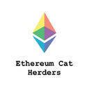
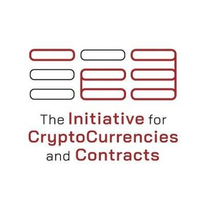
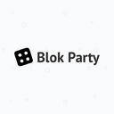
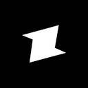

 Ethereum Cat Herders Ethereum Cat Herders 是一群为以太坊社区服务的独立贡献者，他们通过协调 Hard Forks，监控 EIP，创建 PM 流程和追溯报告，在团队之间传递信息，在所有核心开发的调用期间，记录...
Larva Labs John Watkinson 与 Matt Hall 共同创办的手游开发公司 Larva Lab，早在 2017 年 6 月推出 CryptoPunks，一款可以收集像素人物、外星人、僵尸及人猿图片的游戏
 IC3（加密货币和合约倡议） 微软与康奈尔科技合作的IC3倡议，是专门针对数字货币和合约创新的研究机构，成员包括康奈尔大学、康奈尔理工大学、以色列理工学院的教职员工，以及来自加州大学伯克利分校和伊利诺...
 Blok Party 位于美国硅谷的 Blok Party 科技创业公司，打造全球首款由区块链驱动的游戏机 PlayTable，触摸屏尺寸达 24 英寸，解锁娱乐的新维度，追踪用户的数字收藏品；同时，其打造的 PLAYne...
北京大同区块链技术研究院 北京大同区块链技术研究院有限公司（简称研究院）于2016年6月成立，同年11月入选大同市“凤凰计划”，并获得大同市政府资金支持，主要从事区块链底层技术和智能合约的研发和上层应用，面向企业提供区块链技术的解决方案、技术应用和产品服务等。研究院同时在大数据和人工智能技术方面投入大量研究并已取得创新式成果。
能链科技 能链科技是一家节能环保产业区块链金融服务提供商。能链众合致力于区块链在能源领域的应用，为能源金融产品的开发、审核、登记、交易提供全流程的协作工具，消除能源金融产品开发过程中的链条过长、信息不对称等痛点。
Autonomous Research 领先的金融领域独立研究机构 Autonomous Research，成立于 2009 年，在全球银行、经纪商、资产管理公司、保险、信息服务、支付技术、抵押贷款融资和消费金融公司中进行深入、无偏...
中国互联网金融协会区块链研究工作组 中国互联网金融协会区块链研究工作组为中国互联网金融协会领导下的专项研究组织，将重点对区块链在金融领域应用的技术难点、业务场景、风险管理、行业标准等方面开展研究，跟进国...
 Zed Co. 当前互联网的架构模型存在严重缺陷，Zed Co. 以构建下一代互联网为己任，凭借在不断发展壮大的开源社区与开发软件团队方面的优势，帮助 Web 3.0 项目在这一领域取得成功，同时为以太坊社区带来可持续性和盈利能力。
万向区块链实验室 2015年，万向集团金融板块中国万向控股有限公司在区块链技术领域开始了战略性布局，成立了国内较早的区块链技术研究机构——万向区块链实验室，以太坊创始人Vitalik Buterin担任首席科学家。
Dunamu 韩国金融科技公司 Dunamu 加大投资区块链金融及游戏领域，他们运营韩国排名靠前的交易平台 Upbit，旗下拥有风险投资机构 Dunamu & Partners，并与韩国信用数据共同研发基于区块链...
BlockNovum 瑞士的区块链与加密数字投资、金融服务与研究机构 BlockNovum，为区块链初创公司和加密资产提供专业的投资研究、市场筛选，以及深入分析、专业评估和估值，以辅助投资新一代加密资...